The first isolation of what we now refer to as DNA was accomplished by Johann Friedrich Miescher circa 1870. He reported finding a weakly acidic substance of unknown function in the nuclei of human white blood cells, and named this material "nuclein". A few years later, Miescher separated nuclein into protein and nucleic acid components. In the 1920's nucleic acids were found to be major components of chromosomes, small gene-carrying bodies in the nuclei of complex cells. Elemental analysis of nucleic acids showed the presence of phosphorus, in addition to the usual C, H, N & O. Unlike proteins, nucleic acids contained no sulfur. Complete hydrolysis of chromosomal nucleic acids gave inorganic phosphate, 2-deoxyribose (a previously unknown sugar) and four different heterocyclic bases (shown in the following diagram). To reflect the unusual sugar component, chromosomal nucleic acids are called deoxyribonucleic acids, abbreviated DNA. Analogous nucleic acids in which the sugar component is ribose are termed ribonucleic acids, abbreviated RNA. The acidic character of the nucleic acids was attributed to the phosphoric acid moiety.
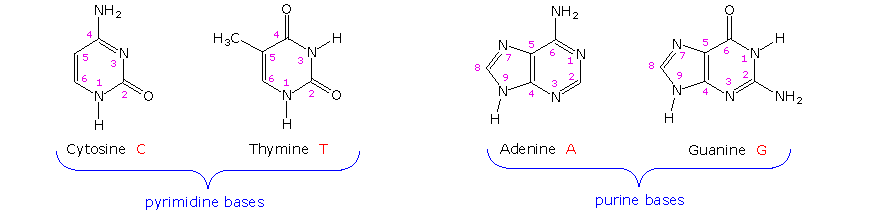
The two monocyclic bases shown here are classified as pyrimidines, and the two bicyclic bases are purines. Each has at least one N-H site at which an organic substituent may be attached. They are all polyfunctional bases, and may exist in tautomeric forms. Base-catalyzed hydrolysis of DNA gave four nucleoside products, which proved to be N-glycosides of 2'-deoxyribose combined with the heterocyclic amines. Structures and names for these nucleosides will be displayed above by clicking on the heterocyclic base diagram. The base components are colored green, and the sugar is black. As noted in the 2'-deoxycytidine structure on the left, the numbering of the sugar carbons makes use of primed numbers to distinguish them from the heterocyclic base sites. The corresponding N-glycosides of the common sugar ribose are the building blocks of RNA, and are named adenosine, cytidine, guanosine and uridine (a thymidine analog missing the methyl group). From this evidence, nucleic acids may be formulated as alternating copolymers of phosphoric acid (P) and nucleosides (N), as shown:
At first the four nucleosides, distinguished by prime marks in this crude formula, were assumed to be present in equal amounts, resulting in a uniform structure, such as that of starch. However, a compound of this kind, presumably common to all organisms, was considered too simple to hold the hereditary information known to reside in the chromosomes. This view was challenged in 1944, when Oswald Avery and colleagues demonstrated that bacterial DNA was likely the genetic agent that carried information from one organism to another in a process called "transformation". He concluded that "nucleic acids must be regarded as possessing biological specificity, the chemical basis of which is as yet undetermined." Despite this finding, many scientists continued to believe that chromosomal proteins, which differ across species, between individuals, and even within a given organism, were the locus of an organism's genetic information. It should be noted that single celled organisms like bacteria do not have a well-defined nucleus. Instead, their single chromosome is associated with specific proteins in a region called a "nucleoid". Nevertheless, the DNA from bacteria has the same composition and general structure as that from multicellular organisms, including human beings.
Views about the role of DNA in inheritance changed in the late 1940's and early 1950's. By conducting a careful analysis of DNA from many sources, Erwin Chargaff found its composition to be species specific. In addition, he found that the amount of adenine (A) always equaled the amount of thymine (T), and the amount of guanine (G) always equaled the amount of cytosine (C), regardless of the DNA source. As set forth in the following table, the ratio of (A+T) to (C+G) varied from 2.70 to 0.35. The last two organisms are bacteria.
Organism
Base Composition (mole %)
Base Ratios
Ratio (A+T)/(G+C)
Human
Chicken
Yeast
Clostridiumperfringens
Sarcinalutea
In a second critical study, Alfred Hershey and Martha Chase showed that when a bacterium is infected and genetically transformed by a virus, at least 80% of the viral DNA enters the bacterial cell and at least 80% of the viral protein remains outside. Together with the Chargaff findings this work established DNA as the repository of the unique genetic characteristics of an organism.
The polymeric structure of DNA may be described in terms of monomeric units of increasing complexity. In the top shaded box of the following illustration, the three relatively simple components mentioned earlier are shown. Below that on the left , formulas for phosphoric acid and a nucleoside are drawn. Condensation polymerization of these leads to the DNA formulation outlined above. Finally, a 5'- monophosphate ester, called a nucleotide may be drawn as a single monomer unit, shown in the shaded box to the right. Since a monophosphate ester of this kind is a strong acid (pKa of 1.0), it will be fully ionized at the usual physiological pH (ca.7.4). Names for these DNA components are given in the table to the right of the diagram. Isomeric 3'-monophospate nucleotides are also known, and both isomers are found in cells. They may be obtained by selective hydrolysis of DNA through the action of nuclease enzymes. Anhydride-like di- and tri-phosphate nucleotides have been identified as important energy carriers in biochemical reactions, the most common being ATP (adenosine 5'-triphosphate).
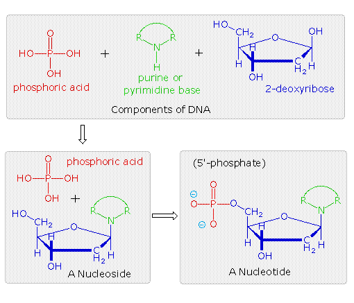
Base
Nucleoside
5'-Nucleotide
A complete structural representation of a segment of the DNA polymer formed from 5'-nucleotides may be viewed by clicking on the above diagram. Several important characteristics of this formula should be noted.
• First, the remaining P-OH function is quite acidic and is completely ionized in biological systems. • Second, the polymer chain is structurally directed. One end (5') is different from the other (3'). • Third, although this appears to be a relatively simple polymer, the possible permutations of the four nucleosides in the chain become very large as the chain lengthens. • Fourth, the DNA polymer is much larger than originally believed. Molecular weights for the DNA from multicellular organisms are commonly 109 or greater.
Information is stored or encoded in the DNA polymer by the pattern in which the four nucleotides are arranged. To access this information the pattern must be "read" in a linear fashion, just as a bar code is read at a supermarket checkout. Because living organisms are extremely complex, a correspondingly large amount of information related to this complexity must be stored in the DNA. Consequently, the DNA itself must be very large, as noted above. Even the single DNA molecule from an E. coli bacterium is found to have roughly a million nucleotide units in a polymer strand, and would reach a millimeter in length if stretched out. The nuclei of multicellular organisms incorporate chromosomes, which are composed of DNA combined with nuclear proteins called histones. The fruit fly has 8 chromosomes, humans have 46 and dogs 78 (note that the amount of DNA in a cell's nucleus does not correlate with the number of chromosomes). The DNA from the smallest human chromosome is over ten times larger than E. coli DNA, and it has been estimated that the total DNA in a human cell would extend to 2 meters in length if unraveled. Since the nucleus is only about 5μm in diameter, the chromosomal DNA must be packed tightly to fit in that small volume. In addition to its role as a stable informational library, chromosomal DNA must be structured or organized in such a way that the chemical machinery of the cell will have easy access to that information, in order to make important molecules such as polypeptides. Furthermore, accurate copies of the DNA code must be created as cells divide, with the replicated DNA molecules passed on to subsequent cell generations, as well as to progeny of the organism. The nature of this DNA organization, or secondary structure, will be discussed in a later section.
The high molecular weight nucleic acid, DNA, is found chiefly in the nuclei of complex cells, known as eucaryotic cells, or in the nucleoid regions of procaryotic cells, such as bacteria. It is often associated with proteins that help to pack it in a usable fashion. In contrast, a lower molecular weight, but much more abundant nucleic acid, RNA, is distributed throughout the cell, most commonly in small numerous organelles called ribosomes. Three kinds of RNA are identified, the largest subgroup (85 to 90%) being ribosomal RNA, rRNA, the major component of ribosomes, together with proteins. The size of rRNA molecules varies, but is generally less than a thousandth the size of DNA. The other forms of RNA are messenger RNA , mRNA, and transfer RNA , tRNA. Both have a more transient existence and are smaller than rRNA. All these RNA's have similar constitutions, and differ from DNA in two important respects. As shown in the following diagram, the sugar component of RNA is ribose, and the pyrimidine base uracil replaces the thymine base of DNA. The RNA's play a vital role in the transfer of information (transcription) from the DNA library to the protein factories called ribosomes, and in the interpretation of that information (translation) for the synthesis of specific polypeptides. These functions will be described later.
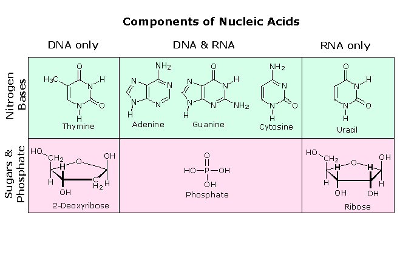
A complete structural representation of a segment of the RNA polymer formed from 5'-nucleotides may be viewed by clicking on the above diagram
In the early 1950's the primary structure of DNA was well established, but a firm understanding of its secondary structure was lacking. Indeed, the situation was similar to that occupied by the proteins a decade earlier, before the alpha helix and pleated sheet structures were proposed by Linus Pauling. Many researchers grappled with this problem, and it was generally conceded that the molar equivalences of base pairs (A & T and C & G) discovered by Chargaff would be an important factor. Rosalind Franklin, working at King's College, London, obtained X-ray diffraction evidence that suggested a long helical structure of uniform thickness. Francis Crick and James Watson, at Cambridge University, considered hydrogen bonded base pairing interactions, and arrived at a double stranded helical model that satisfied most of the known facts, and has been confirmed by subsequent findings.
Base Pairing Careful examination of the purine and pyrimidine base components of the nucleotides reveals that three of them could exist as hydroxy pyrimidine or purine tautomers, having an aromatic heterocyclic ring. Despite the added stabilization of an aromatic ring, these compounds prefer to adopt amide-like structures. These options are shown in the following diagram, with the more stable tautomer drawn in blue.
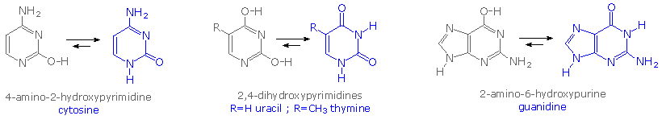
A simple model for this tautomerism is provided by 2-hydroxypyridine. As shown on the left below, a compound having this structure might be expected to have phenol-like characteristics, such as an acidic hydroxyl group. However, the boiling point of the actual substance is 100º C greater than phenol and its acidity is 100 times less than expected (pKa = 11.7). These differences agree with the 2-pyridone tautomer, the stable form of the zwitterionic internal salt. Further evidence supporting this assignment will be displayed by clicking on the diagram. Note that this tautomerism reverses the hydrogen bonding behavior of the nitrogen and oxygen functions (the N-H group of the pyridone becomes a hydrogen bond donor and the carbonyl oxygen an acceptor).
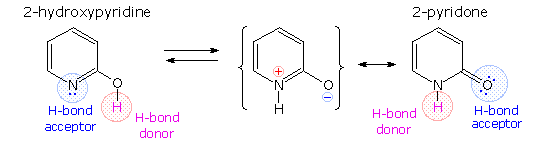
The additional evidence for the pyridone tautomer, that appears above by clicking on the diagram, consists of infrared and carbon nmr absorptions associated with and characteristic of the amide group. The data for 2-pyridone is given on the left. Similar data for the N-methyl derivative, which cannot tautomerize to a pyridine derivative, is presented on the right.
Once they had identified the favored base tautomers in the nucleosides, Watson and Crick were able to propose a complementary pairing, via hydrogen bonding, of guanosine (G) with cytidine (C) and adenosine (A) with thymidine (T). This pairing, which is shown in the following diagram, explained Chargaff's findings beautifully, and led them to suggest a double helix structure for DNA. Before viewing this double helix structure itself, it is instructive to examine the base pairing interactions in greater detail. The G#C association involves three hydrogen bonds (colored pink), and is therefore stronger than the two-hydrogen bond association of A#T. These base pairings might appear to be arbitrary, but other possibilities suffer destabilizing steric or electronic interactions. By clicking on the diagram two such alternative couplings will be shown. The C#T pairing on the left suffers from carbonyl dipole repulsion, as well as steric crowding of the oxygens. The G#A pairing on the right is also destabilized by steric crowding (circled hydrogens).
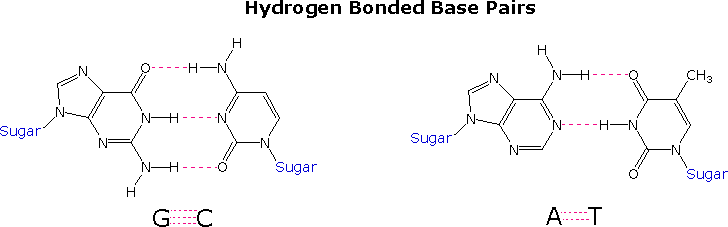
A simple mnemonic device for remembering which bases are paired comes from the line construction of the capital letters used to identify the bases. A and T are made up of intersecting straight lines. In contrast, C and G are largely composed of curved lines. The RNA base uracil corresponds to thymine, since U follows T in the alphabet.
After many trials and modifications, Watson and Crick conceived an ingenious double helix model for the secondary structure of DNA. Two strands of DNA were aligned anti-parallel to each other, i.e. with opposite 3' and 5' ends , as shown in part a of the following diagram. Complementary primary nucleotide structures for each strand allowed intra-strand hydrogen bonding between each pair of bases. These complementary strands are colored red and green in the diagram. Coiling these coupled strands then leads to a double helix structure, shown as cross-linked ribbons in part b of the diagram. The double helix is further stabilized by hydrophobic attractions and pi-stacking of the bases. A space-filling molecular model of a short segment is displayed in part c on the right. The helix shown here has ten base pairs per turn, and rises 3.4 Å in each turn. This right-handed helix is the favored conformation in aqueous systems, and has been termed the B-helix. As the DNA strands wind around each other, they leave gaps between each set of phosphate backbones. Two alternating grooves result, a wide and deep major groove (ca. 22Å wide), and a shallow and narrow minor groove (ca. 12Å wide). Other molecules, including polypeptides, may insert into these grooves, and in so doing perturb the chemistry of DNA. Other helical structures of DNA have also been observed, and are designated by letters (e.g. A and Z).
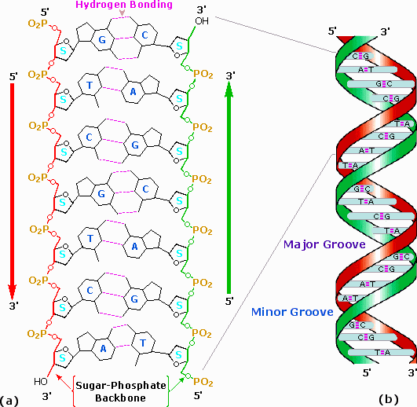
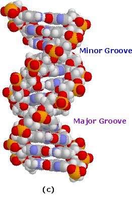
A model of a short DNA segment may be examined by
Excellent sites, incorporating Chime and Jmol models for visualizing DNA, has been created by: Eric Martz, Univ. Mass. Amherst. Click Here. Frieda Reichsman, Univ. Mass. Amherst. Click Here
In their 1953 announcement of a double helix structure for DNA, Watson and Crick stated, "It has not escaped our notice that the specific pairing we have postulated immediately suggests a possible copying mechanism for the genetic material.". The essence of this suggestion is that, if separated, each strand of the molecule might act as a template on which a new complementary strand might be assembled, leading finally to two identical DNA molecules. Indeed, replication does take place in this fashion when cells divide, but the events leading up to the actual synthesis of complementary DNA strands are sufficiently complex that they will not be described in any detail.
As depicted in the following drawing, the DNA of a cell is tightly packed into chromosomes. First, the DNA is wrapped around small proteins called histones (colored pink below). These bead-like structures are then further organized and folded into chromatin aggregates that make up the chromosomes. An overall packing efficiency of 7,000 or more is thus achieved. Clearly a sequence of unfolding events must take place before the information encoded in the DNA can be used or replicated.
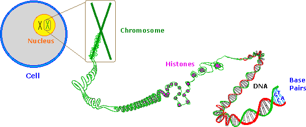
Once the double stranded DNA is exposed, a group of enzymes act to accomplish its replication. These are described briefly here:
Topoisomerase: This enzyme initiates unwinding of the double helix by cutting one of the strands. Helicase: This enzyme assists the unwinding. Note that many hydrogen bonds must be broken if the strands are to be separated.. SSB: A single-strand binding-protein stabilizes the separated strands, and prevents them from recombining, so that the polymerization chemistry can function on the individual strands. DNA Polymerase: This family of enzymes link together nucleotide triphosphate monomers as they hydrogen bond to complementary bases. These enzymes also check for errors (roughly ten per billion), and make corrections. Ligase: Small unattached DNA segments on a strand are united by this enzyme.
Polymerization of nucleotides takes place by the phosphorylation reaction described by the following equation.
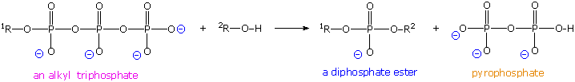
Di- and triphosphate esters have anhydride-like structures and are consequently reactive phosphorylating reagents, just as carboxylic anhydrides are acylating reagents. Since the pyrophosphate anion is a better leaving group than phosphate, triphosphates are more powerful phosphorylating agents than are diphosphates. Formulas for the corresponding 5'-derivatives of adenosine will be displayed by Clicking Here, and similar derivatives exist for the other three common nucleosides. The DNA polymerization process that builds the complementary strands in replication, could in principle take place in two ways. Referring to the general equation above, R1 could represent the next nucleotide unit to be attached to the growing DNA strand, with R2 being this strand. Alternatively, these assignments could be reversed. In practice, the former proves to be the best arrangement. Since triphosphates are very reactive, the lifetime of such derivatives in an aqueous environment is relatively short. However, such derivatives of the individual nucleosides are repeatedly synthesized by the cell for a variety of purposes, providing a steady supply of these reagents. In contrast, the growing DNA segment must maintain its functionality over the entire replication process, and can not afford to be changed by a spontaneous hydrolysis event. As a result, these chemical properties are best accommodated by a polymerization process that proceeds at the 3'-end of the growing strand by 5'-phosphorylation involving a nucleotide triphosphate. This process is illustrated by the following animation, which may be activated by clicking on the diagram or reloading the page.
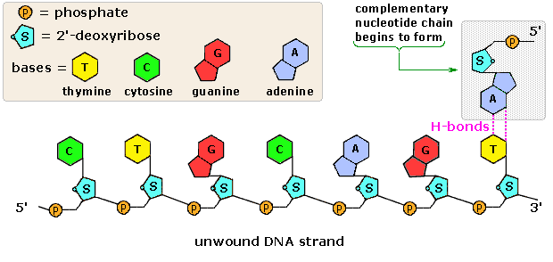
The polymerization mechanism described here is constant. It always extends the developing DNA segment toward the 3'-end (i.e. when a nucleotide triphosphate attaches to the free 3'-hydroxyl group of the strand, a new 3'-hydroxyl is generated). There is sometimes confusion on this point, because the original DNA strand that serves as a template is read from the 3'-end toward the 5'-end, and authors may not be completely clear as to which terminology is used. Because of the directional demand of the polymerization, one of the DNA strands is easily replicated in a continuous fashion, whereas the other strand can only be replicated in short segmental pieces. This is illustrated in the following diagram. Separation of a portion of the double helix takes place at a site called the replication fork. As replication of the separate strands occurs, the replication fork moves away (to the left in the diagram), unwinding additional lengths of DNA. Since the fork in the diagram is moving toward the 5'-end of the red-colored strand, replication of this strand may take place in a continuous fashion (building the new green strand in a 5' to 3' direction). This continuously formed new strand is called the leading strand. In contrast, the replication fork moves toward the 3'-end of the original green strand, preventing continuous polymerization of a complementary new red strand. Short segments of complementary DNA, called Okazaki fragments, are produced, and these are linked together later by the enzyme ligase. This new DNA strand is called the lagging strand.
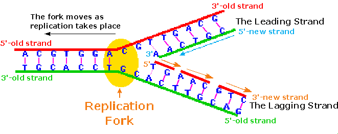
When you consider that a human cell has roughly 109 base pairs in its DNA, and may divide into identical daughter cells in 14 to 24 hours, the efficiency of DNA replication must be extraordinary. The procedure described above will replicate about 50 nucleotides per second, so there must be many thousand such replication sites in action during cell division. A given length of double stranded DNA may undergo strand unwinding at numerous sites in response to promoter actions. The unraveled "bubble" of single stranded DNA has two replication forks, so assembly of new complementary strands may proceed in two directions. The polymerizations associated with several such bubbles fuse together to achieve full replication of the entire DNA double helix. A cartoon illustrating these concerted replications will appear by clicking on the above diagram. Note that the events shown proceed from top to bottom in the diagram.
One of the benefits of the double stranded DNA structure is that it lends itself to repair, when structural damage or replication errors occur. Several kinds of chemical change may cause damage to DNA:
• Spontaneous hydrolysis of a nucleoside removes the heterocyclic base component. • Spontaneous hydrolysis of cytosine changes it to a uracil. • Various toxic metabolites may oxidize or methylate heterocyclic base components. • Ultraviolet light may dimerize adjacent cytosine or thymine bases.
All these transformations disrupt base pairing at the site of the change, and this produces a structural deformation in the double helix.. Inspection-repair enzymes detect such deformations, and use the undamaged nucleotide at that site as a template for replacing the damaged unit. These repairs reduce errors in DNA structure from about one in ten million to one per trillion.
The genetic information stored in DNA molecules is used as a blueprint for making proteins. Why proteins? Because these macromolecules have diverse primary, secondary and tertiary structures that equip them to carry out the numerous functions necessary to maintain a living organism. As noted in the protein chapter, these functions include:
• Structural integrity (hair, horn, eye lenses etc.). • Molecular recognition and signaling (antibodies and hormones). • Catalysis of reactions (enzymes).. • Molecular transport (hemoglobin transports oxygen). • Movement (pumps and motors).
The critical importance of proteins in life processes is demonstrated by numerous genetic diseases, in which small modifications in primary structure produce debilitating and often disastrous consequences. Such genetic diseases include Tay-Sachs, phenylketonuria (PKU), sickel cell anemia, achondroplasia, and Parkinson disease. The unavoidable conclusion is that proteins are of central importance in living cells, and that proteins must therefore be continuously prepared with high structural fidelity by appropriate cellular chemistry. Early geneticists identified genes as hereditary units that determined the appearance and / or function of an organism (i.e. its phenotype). We now define genes as sequences of DNA that occupy specific locations on a chromosome. The original proposal that each gene controlled the formation of a single enzyme has since been modified as: one gene = one polypeptide. The intriguing question of how the information encoded in DNA is converted to the actual construction of a specific polypeptide has been the subject of numerous studies, which have created the modern field of Molecular Biology.
Francis Crick proposed that information flows from DNA to RNA in a process called transcription, and is then used to synthesize polypeptides by a process called translation. Transcription takes place in a manner similar to DNA replication. A characteristic sequence of nucleotides marks the beginning of a gene on the DNA strand, and this region binds to a promoter protein that initiates RNA synthesis. The double stranded structure unwinds at the promoter site., and one of the strands serves as a template for RNA formation, as depicted in the following diagram. The RNA molecule thus formed is single stranded, and serves to carry information from DNA to the protein synthesis machinery called ribosomes. These RNA molecules are therefore called messenger-RNA (mRNA). To summarize: a gene is a stretch of DNA that contains a pattern for the amino acid sequence of a protein. In order to actually make this protein, the relevant DNA segment is first copied into messenger-RNA. The cell then synthesizes the protein, using the mRNA as a template.
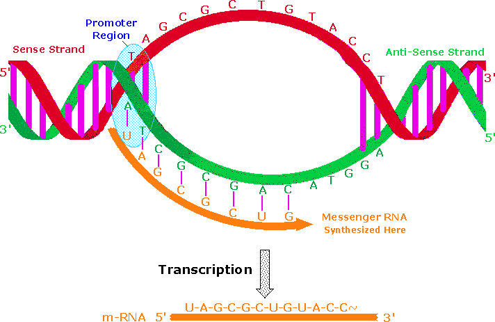
An important distinction must be made here. One of the DNA strands in the double helix holds the genetic information used for protein synthesis. This is called the sense strand, or information strand (colored red above). The complementary strand that binds to the sense strand is called the anti-sense strand (colored green), and it serves as a template for generating a mRNA molecule that delivers a copy of the sense strand information to a ribosome. The promoter protein binds to a specific nucleotide sequence that identifies the sense strand, relative to the anti-sense strand. RNA synthesis is then initiated in the 3' direction, as nucleotide triphosphates bind to complementary bases on the template strand, and are joined by phosphate diester linkages. An animation of this process for DNA replication was presented earlier. A characteristic "stop sequence" of nucleotides terminates the RNA synthesis. The messenger molecule (colored orange above) is released into the cytoplasm to find a ribosome, and the DNA then rewinds to its double helix structure. In eucaryotic cells the initially transcribed m-RNA molecule is usually modified and shortened by an "editing" process that removes irrelevant material. The DNA of such organisms is often thousands of times larger and more complex than that composing the single chromosome of a procaryotic bacterial cell. This difference is due in part to repetitive nucleotide sequences (ca. 25% in the human genome). Furthermore, over 95% of human DNA is found in intervening sequences that separate genes and parts of genes. The informational DNA segments that make up genes are called exons, and the noncoding segments are called introns. Before the mRNA molecule leaves the nucleus, the nonsense bases that make up the introns are cut out, and the informationally useful exons are joined together in a step known as RNA splicing. In this fashion shorter mRNA molecules carrying the blueprint for a specific protein are sent on their way to the ribosome factories.
The Central Dogma of molecular biology, which at first was formulated as a simple linear progression of information from DNA to RNA to Protein, is summarized in the following illustration. The replication process on the left consists of passing information from a parent DNA molecule to daughter molecules. The middle transcription process copies this information to a mRNA molecule. Finally, this information is used by the chemical machinery of the ribosome to make polypeptides.
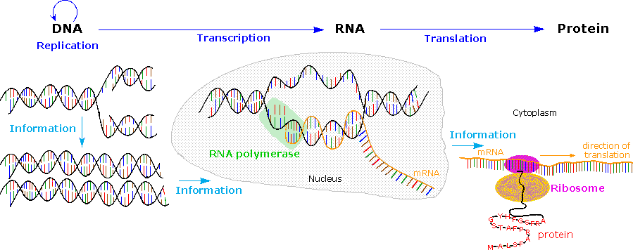
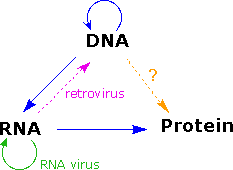
Translation is a more complex process than transcription. This would, of course, be expected. After all, the coded messages produced by the German Enigma machine could be copied easily, but required a considerable decoding effort before they could be read with understanding. In a similar sense, DNA replication is simply a complementary base pairing exercise, but the translation of the four letter (bases) alphabet code of RNA to the twenty letter (amino acids) alphabet of protein literature is far from trivial. Clearly, there could not be a direct one-to-one correlation of bases to amino acids, so the nucleotide letters must form short words or codons that define specific amino acids. Many questions pertaining to this genetic code were posed in the late 1950's:
• How many RNA nucleotide bases designate a specific amino acid?If separate groups of nucleotides, called codons, serve this purpose, at least three are needed. There are 43 = 64 different nucleotide triplets, compared with 42 = 16 possible pairs. • Are the codons linked separately or do they overlap? Sequentially joined triplet codons will result in a nucleotide chain three times longer than the protein it describes. If overlapping codons are used then fewer total nucleotides would be required. • If triplet segments of mRNA designate specific amino acids in the protein, how are the codons identified? For the sequence ~CUAGGU~ are the codons CUA & GGU or ~C, UAG & GU~ or ~CU, AGG & U~? • Are all the codon words the same size?In Morse code the most widely used letters are shorter than less common letters. Perhaps nature employs a similar scheme.
Physicists and mathematicians, as well as chemists and microbiologists all contributed to unravelling the genetic code. Although earlier proposals assumed efficient relationships that correlated the nucleotide codons uniquely with the twenty fundamental amino acids, it is now apparent that there is considerable redundancy in the code as it now operates. Furthermore, the code consists exclusively of non-overlapping triplet codons. Clever experiments provided some of the earliest breaks in deciphering the genetic code. Marshall Nirenberg found that RNA from many different organisms could initiate specific protein synthesis when combined with broken E.coli cells (the enzymes remain active). A synthetic polyuridine RNA induced synthesis of poly-phenylalanine, so the UUU codon designated phenylalanine. Likewise an alternating ~CACA~ RNA led to synthesis of a ~His-Thr-His-Thr~ polypeptide. The following table presents the present day interpretation of the genetic code. Note that this is the RNA alphabet, and an equivalent DNA codon table would have all the U nucleotides replaced by T. Methionine and tryptophan are uniquely represented by a single codon. At the other extreme, leucine is represented by eight codons. The average redundancy for the twenty amino acids is about three. Also, there are three stop codons that terminate polypeptide synthesis.
Second Position
First Position
Third Position
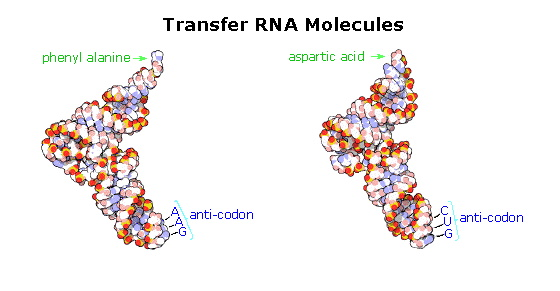
The translation process is fundamentally straightforward. The mRNA strand bearing the transcribed code for synthesis of a protein interacts with relatively small RNA molecules (about 70-nucleotides) to which individual amino acids have been attached by an ester bond at the 3'-end. These transfer RNA's (tRNA) have distinctive three-dimensional structures consisting of loops of single-stranded RNA connected by double stranded segments. This cloverleaf secondary structure is further wrapped into an "L-shaped" assembly, having the amino acid at the end of one arm, and a characteristic anti-codon region at the other end. The anti-codon consists of a nucleotide triplet that is the complement of the amino acid's codon(s). Models of two such tRNA molecules are shown to the right. When read from the top to the bottom, the anti-codons depicted here should complement a codon in the previous table.Cloverleaf cartoons of three other tRNA molecules will be shown on the right by clicking on the diagram.
A cell's protein synthesis takes place in organelles called ribosomes. Ribosomes are complex structures made up of two distinct and separable subunits (one about twice the size of the other). Each subunit is composed of one or two RNA molecules (60-70%) associated with 20 to 40 small proteins (30-40%). The ribosome accepts a mRNA molecule, binding initially to a characteristic nucleotide sequence at the 5'-end (colored light blue in the following diagram). This unique binding assures that polypeptide synthesis starts at the right codon. A tRNA molecule with the appropriate anti-codon then attaches at the starting point and this is followed by a series of adjacent tRNA attachments, peptide bond formation and shifts of the ribosome along the mRNA chain to expose new codons to the ribosomal chemistry. The following diagram is designed as a slide show illustrating these steps. The outcome is synthesis of a polypeptide chain corresponding to the mRNA blueprint. A "stop codon" at a designated position on the mRNA terminates the synthesis by introduction of a "Release Factor".
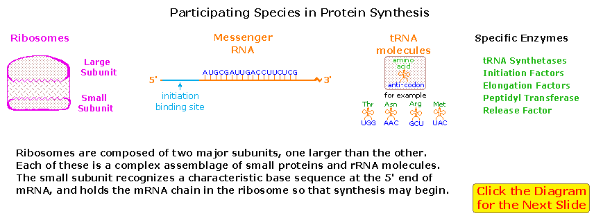
To visit an informative Tour of the Ribosome site, created by Wayne Decatur, Univ. Mass. Amherst Click Here.
Once a peptide or protein has been synthesized and released from the ribosome it often undergoes further chemical transformation. This post-translational modification may involve the attachment of other moieties such as acyl groups, alkyl groups, phosphates, sulfates, lipids and carbohydrates. Functional changes such as dehydration, amidation, hydrolysis and oxidation (e.g. disulfide bond formation) are also common. In this manner the limited array of twenty amino acids designated by the codons may be expanded in a variety of ways to enable proper functioning of the resulting protein. Since these post-translational reactions are generally catalyzed by enzymes, it may be said: "Virtually every molecule in a cell is made by the ribosome or by enzymes made by the ribosome." Modifications, like phosphorylation and citrullination, are part of common mechanisms for controlling the behavior of a protein. As shown on the left below, citrullination is the post-translational modification of the amino acid arginine into the amino acid citrulline. Arginine is positively charged at a neutral pH, whereas citrulline is uncharged, so this change increases the hydrophobicity of a protein. Phosphorylation of serine, threonine or tyrosine residues renders them more hydrophilic, but such changes are usually transient, serving to regulate the biological activity of the protein. Other important functional changes include iodination of tyrosine residues in the peptide thyroglobulin by action of the enzyme thyroperoxidase. The monoiodotyrosine and diiodotyrosine formed in this manner are then linked to form the thyroid hormones T3 and T4, shown on the right below.
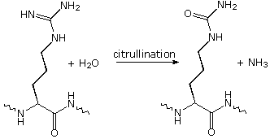
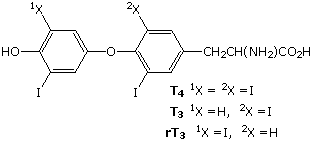
Amino acids may be enzymatically removed from the amino end of the protein. Because the "start" codon on mRNA codes for the amino acid methionine, this amino acid is usually removed from the resulting protein during post-translational modification. Peptide chains may also be cut in the middle to form shorter strands. Thus, insulin is initially synthesized as a 105 residue preprotein. The 24-amino acid signal peptide is removed, yielding a proinsulin peptide. This folds and forms disulfide bonds between cysteines 7 and 67 and between 19 and 80. Such dimeric cysteines, joined by a disulfide bond, are named cystine. A protease then cleaves the peptide at arg31 and arg60, with loss of the 32-60 sequence (chain C). Removal of arg31 yields mature insulin, with the A and B chains held together by disulfide bonds and a third cystine moiety in chain A. The following cartoon illustrates this chain of events.
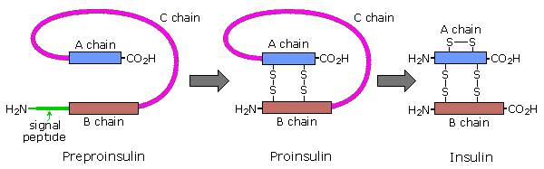
Nisin is a polypeptide (34 amino acids) made by the bacterium Lactococcus lactis. Nisin kills gram positive bacteria by binding to their membranes and targeting lipid II, an essential precursor of cell wall synthesis. Such antimicrobial peptides are a growing family of compounds which have received the name lantibiotics due to the presence of lanthionine, a nonproteinogenic amino acid with the chemical formula HO2C-CH(NH2)-CH2-S-CH2-CH(NH2)-CO2H. Lanthionine is composed of two alanine residues that are crosslinked on their β-carbon atoms by a thioether linkage (i.e. it is the monosulfide analog of the disulfide cystine). Lantibiotics are unique in that they are ribosomally synthesized as prepeptides, followed by post-translational processing of a number of amino acids (e.g. serine, threonine and cysteine) into dehydro residues and thioether crossbridges. Nisin is the only bacteriocin that is accepted as a food preservative. Several nisin subtypes that differ in amino acid composition and biological activity are known. A typical structure is drawn below, and a Jmol model will be presented by clicking on the diagram.
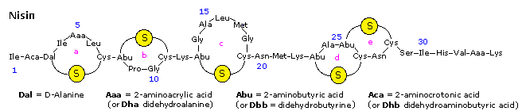
The bacterial cell wall is a cross-linked glycan polymer that surrounds bacterial cells, dictates their cell shape, and prevents them from breaking due to environmental changes in osmotic pressure. This wall consists mainly of peptidoglycan or murein, a three-dimensional polymer of sugars and amino acids located on the exterior of the cytoplasmic membrane.
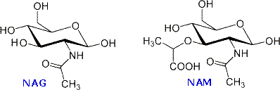
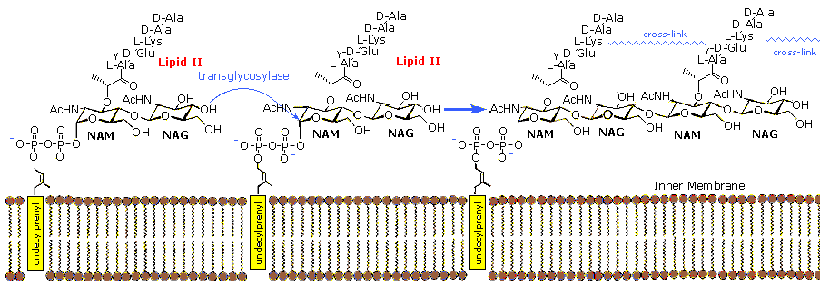
In order for bacteria to divide by binary fission and increase their size following division, links in the peptidoglycan must be broken, new peptidoglycan monomers must be inserted, and the peptide cross links must be resealed. Transglycosidase enzymes catalyze the formation of glycosidic bonds between the NAM and NAG of the peptidoglycan monomers and the NAG and NAM of the existing peptidoglycan. Finally, transpeptidase enzymes reform the peptide cross-links between the rows and layers of peptidoglycan making the wall strong. Many antibiotic drugs, including penicillin, target the chemistry of cell wall formation. The effectiveness of choosing Lipid II for an antibacterial strategy is highlighted by the fact that it is the target for at least four different classes of antibiotic, including the clinically important glycopeptide antibiotic vancomycin. The growing problem of bacterial resistance to many current drugs, including vancomycin, has led to increasing interest in the therapeutic potential of other classes of compound that target Lipid II. Lantibiotics such as nisin are part of this interest.
For a speculative discussion of why nature selected the components and functional groups found in the nucleic acids Click Here.
This page is the property of The Edvibe Team. Comments, questions and errors should be sent to contact@edvibe.co.ke. These pages are provided to the IOCD to assist in capacity building in chemical education. 05/05/2013
We know that living organisms have the ability to reproduce and to pass many of their characteristics on to their offspring. From this we may infer that all organisms have genetic substances and an associated chemistry that enable inheritance to occur. It is instructive to consider the essential requirements such genetic materials must fullfill.
Information Biologically useful information, especially instructions for protein synthesis, must be incorporated in the material. Stability The inherited information must be stable (unchanged) over the lifetime of the organism if accurate copies are to be conveyed to the offspring. Infrequent changes may take place (see mutability). Reproduction A method of faithfully replicating the information encoded in the material, and transmitting this copy to the offspring must exist. Mutability Despite the inherent stability noted above, the material must be capable of incorporating stable structural change, and passing this change on to succeeding generations.
Since this genetic substance has been identified as the nucleic acids DNA and RNA, it is instructive to examine the manner in which these polymers satisfy the above requirements.
The complexity of life suggests that even simple organisms will require very large inheritance libraries. Although the four nucleotides that make up of DNA might appear to be too simple for this task, the enormous size of the polymer and the permutations of the monomers within the chain meet the challenge easily. After all, the words and graphics in this document are all presented to the computer as combinations of only two characters, zeros and ones (the binary number system). DNA has four letters in its alphabet (A, C, G & T), so the number of words that can be formed increase exponentially with the number of letters per word. Thus, there are 42 or 16 two letter words, and 43 or 64 three letter words.
Assuring the stability of information encoded by the DNA alphabet presents a serious challenge. If the letters of this alphabet are to be strung together in a specific way on the polymer chain, chemical reactions for attaching (and removing) them must be available. Simple carboxylic ester or amide links might appear suitable for this purpose (note step-growth polymerization), but these are used in lipids and polypeptides, so a separate enzymatic machinery would be needed to keep the information processing operations apart from other molecular transformations. The overall stability of such covalent links presents a more serious problem. Under physiological conditions (aqueous, pH near 7.4 & 27 to 37º C) esters are slowly hydrolyzed. Amides are more stable, but even a hydrolytic cleavage of one bond per hour would be devastating to a polymer having tens of thousands to millions such links. Furthermore, short difunctional linking groups, such as carbonates, oxylates and malonates show enhanced reactivity, and their parent acids are unstable or toxic.
Ester
Rate of Hydrolysis
Relative Rate
Phosphate is an ubiquitous inorganic nutrient. Mono, di and triesters of the corresponding acid (phosphoric acid) are all known. Because of their acidity (pKa ≈ 2), the mono and diesters are negatively charged at physiological pH, rendering them less susceptible to nucleophilic attack. The influence of negative charge on the rate of nucleophilic hydrolysis of some representative esters is shown in the table on the right. Clearly, a polymer in which monomer units are joined by negatively charged diphosphate ester links should be substantially more stable than one composed of carboxylate ester bonds. The negative charge found on all biological phosphate derivatives serves other purposes as well. • The diphosphate ester links that join the nucleotides units of DNA are formed by phosphorylation reactions involving nucleotide triphosphate reagents. These reagents are the phosphoric acid analogs of carboxylic acid anhydrides, a functional group that would not survive the aqueous environment of a cell. The high density of negative charge on the triphosphate function not only solubilizes the organic moiety to which it is attached, but also reduces the rate at which it is hydrolyzed. • Living cells must conserve and employ their chemical reagents within a volume defined and enclosed by a membrane barrier. These lipid bilayer membranes have hydrophobic interiors, which resist the passage of ions. Indeed, special trans-membrane structures called ion channels exist so that controlled ion transport across a membrane may take place. Small neutral organic molecules, such as adenosine, cytidine and guanosine, may pass through lipid membranes, albeit at a reduced rate, but their mono, di and triphosphate derivatives are more tightly sequestered in the cell.
Common perhydroxylated sugars, such as glucose and ribose, are formed in nature as products of the reductive condensation of carbon dioxide we call photosynthesis. The formation of deoxysugars requires additional biological reduction steps, so it is reasonable to speculate why DNA makes use of the less common 2'-deoxyribose, when ribose itself serves well for RNA. At least two problems associated with the extra hydroxyl group in ribose may be noted. First, the additional bulk and hydrogen bonding character of the 2'-OH interfere with a uniform double helix structure, preventing the efficient packing of such a molecule in the chromosome. Second, RNA undergoes spontaneous hydrolytic cleavage about one hundred times faster than DNA. This is believed due to intramolecular attack of the 2'-hydroxyl function on the neighboring phosphate diester, yielding a 2',3'-cyclic phosphate. If stability over the lifetime of an organism is an essential characteristic of a gene, then nature's selection of 2'-deoxyribose for DNA makes sense. The following diagram illustrates the intramolecular cleavage reaction in a strand of RNA.
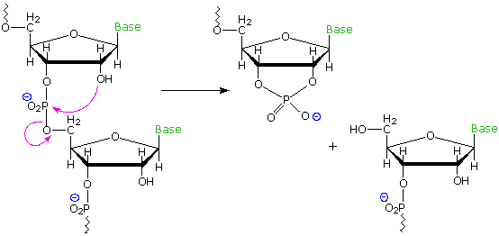
Structural stability is not a serious challenge for RNA. The transcripted information carried by mRNA must be secure for only a few hours, as it is transported to a ribosome. Once in the ribosome it is surrounded by structural and enzymatic segments that immediately incorporate its codons for protein synthesis. The tRNA molecules that carry amino acids to the ribosome are similarly short lived, and are in fact continuously recycled by the cellular chemistry.
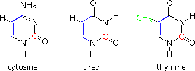
For a more complete discussion of some of the issues touched on here see an article titled "Why Nature Chose Phosphates", authored by F. H .Westheimer, which appeared in the March 6th, 1987 issue of Science.